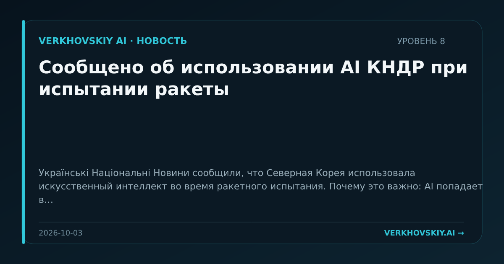

Сообщено об использовании AI КНДР при испытании ракеты
Українські Національні Новини сообщили, что Северная Корея использовала искусственный интеллект во время ракетного испытания. Почему это важно: AI попадает в контур демонстрации военных возможностей государства. Даже краткий сигнал важен как маркер перехода AI из коммерческого поля в область стратегической безопасности.